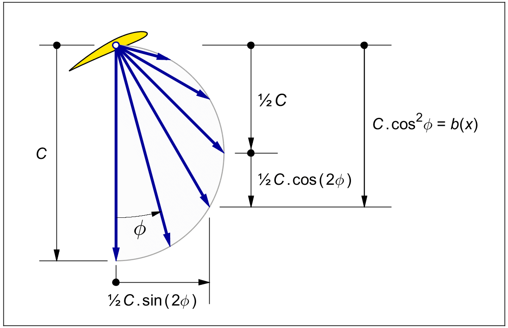
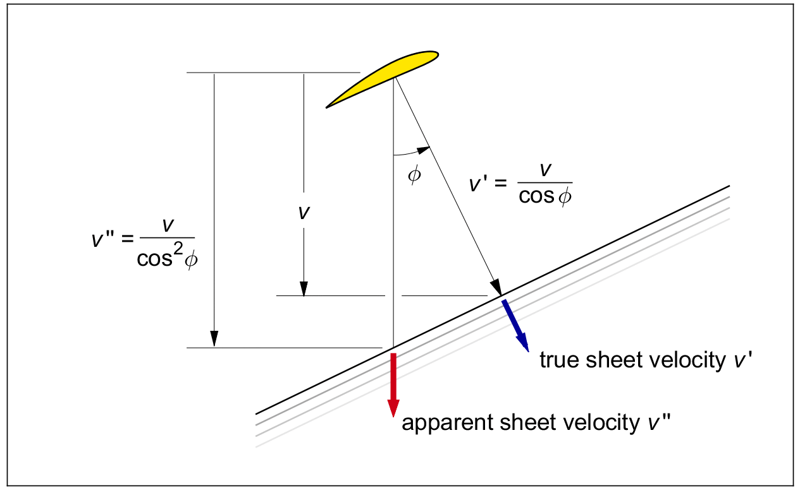
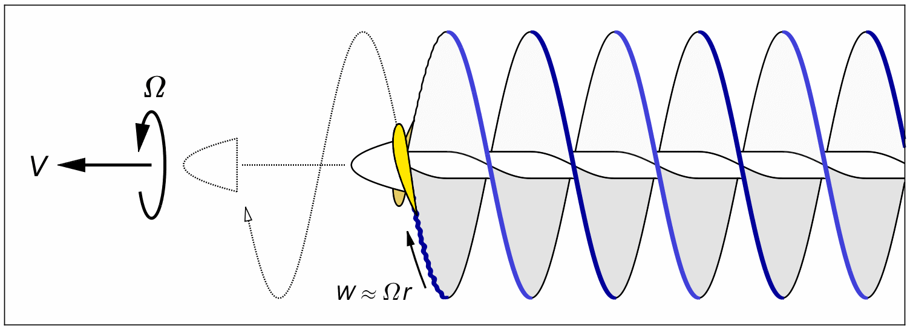
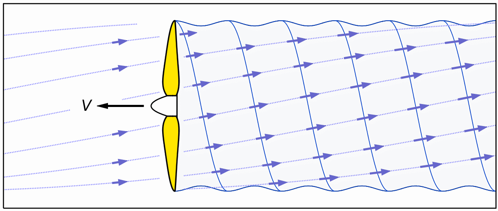

ROTATION
A large part of propeller theory, including the tip loss, is concerned with the conditions inside the wake. In a turn of good fortune, Betz's rotationally optimal induction distribution (10.7) simplifies the shape of the wake sheets to a regular Archimedes screw. We will derive this fact below.
We will see later that the regularity of the screw shape is not distorted by the tip loss, since the tip loss does not affect the local induction - it only affects the mass flow.
The induction velocity vector v ′ in figure 8.2 has an axial component v, and a circumferential ( also called tangential, or sideways ) component u. The axial reduction equals cos 2 φ. From standard trigonometry we have :
| (12.1) |
From the same figure, the tangential component u equals tan φ times the axial component v :
| (12.2) |
Again from standard trigonometry we have :
| (12.3) |
The axial and tangential components can thus both be expressed as functions of the "double pitch angle" 2 φ. Figure 12.1 shows that by these two equations, the ends of the induced velocity vector v ′ lie on a circle with radius ½ C and “phase” 2 φ.

Figure 12.1 : The optimal induction as a function of the local pitch angle.
Far from the hub, the local pitch angle φ
is nearly zero.
The induced velocity vector v ′
points almost straight aft
( down in the picture ),
and its length is nearly C.
Very close to the hub, φ ≅ 90°.
Here v ′
is nearly tangential,
and its length is almost zero.
At the radius x = 1, the vector
points 45° down and has the length
We can see from this picture that the flow tube must be filled with hollow, telescoping tubes of air, which both rotate and slide relative to each other. The inconvenient truth that these telescoping tubes must "rub" against each other is one reason why the independence of the rings is noot self evident, but rather a non-obvious assumption in the theory of the optimal propeller.
Betz was the first to point out that his optimal velocity distribution results in a wake shaped like a regular rigid Archimedes screw, which seems to drift straight to the rear without rotating.
From the previous section we know that in reality, each ring has its own rearward velocity and its own rate of rotation.
The apparent lack of rotation of the Archimedes screw is due to an optical effect called the "barber pole illusion". Figure 12.2 shows the apparent rearward velocity v ′ ( with two primes ). The sheet surface seems to move straight to the rear with the velocity v ′ if we ignore the fact that it is actually moving in a spiral with velocity v , and not really just sliding backward, but rotating as well.
Interestingly, the efficiency (9.5) of the rotationally optimal propeller matches the purely axial efficiency (4.18) of the actuator disk if we replace v by v ′ ( sometimes called ζ by the Greek letter zeta ), or b by b / cos 2 φ. Some texts give v ′ a central role in the theory, which perhaps it does not deserve.
The rigid Archimedes wake shape however is instrumental in both Prandtl’s approximate theory of the tip loss, and in the exact vortex solution of that loss, as we shall see in later chapters.

Figure 12.2 : The apparent axial sheet velocity of the spirals, partly barber pole illusion.
Like a wing, a propeller leaves behind two distinct motions in the air :
- a large scale momentum wake, or propwash.
- a thin viscous wake sheet, sliding off the blade trailing edges.
For the propeller as for the wing, the velocities in the momentum wake and those in the viscous wake are orthogonal in both senses of the word. They are a right angles to each other, and they do not interact.
First we look at the viscous wake. Figure 12.3 shows the zero-thrust wake of a two-bladed propeller. Without blade lift or thrust, there will be no induced velocity. The propeller screws itself effortlessly out of the picture, each blade leaving behind a thin viscous wake sheet in the air.
This viscous "scar" separates the air which passed under the blade section, from the air which passed over it. The friction between the passing air and the surface of the blade drags with it a thin boundary layer of air, which trails off the trailing edges of the blades like treacle from a spoon. This thin viscous sheet momentarily follows the blade, then dissipates to zero velocity relative to the surrounding air after a few chord lengths.
Figure 12.3 indicates the initial following velocity by a small arrow marked W. From the velocity diagram in figure 8.2 we know that for X ≫ 1, the blade velocity W approximately equals Ω r.

Figure 12.3 : Purely viscous wake of a propeller at zero thrust. Two blades, X = 5
The thickness of the viscous trailing sheet roughly equals the local viscous drag coefficient Cd of the blade section times its local chord. In propellers, this viscous sheet thickness is on the order of a millimeter.
The viscous sheet has the shape of an Archimedes screw, like a classical water pump. But instead of rotating in place, the screw is free to screw itself forward through the air like a corkscrew in cork. The sliding motion will generate viscous drag, and the blade will drag a thin sheet of air with it. The air outside the sheets remains completely undisturbed. This means that at zero thrust, the concept of "tip loss" does not apply.
When the propeller starts delivering thrust, the air the propeller has passed through will start drifting slowly backward. The induction (both axial and rotational) starts ahead of the propeller. The induced velocity at the moment of passing is the local induction v ′ from figure 8.2. The rearward drift will have doubled to w ′ once the propeller has passed far away into the distance. Figure 12.4 shows this large-scale velocity field, which influences all of the air within the flow tube that the propeller has passed through.
The local induction v ′ is normally a small fraction of the flying velocity V. Since v ′ is tilted, as seen in figure 8.2, the air is not just floating backward, it is also quietly rotating.
The lift-induced velocity at the blades is by definition at right angles to the local blade velocity, and therefore orthogonal to the spiral surfaces. From figure 12.2 we know that the wake sheets maintain the shape of a rigid Archimedes screw, even though the sheets are stretched and rotated a bit by the blade lift.
Contrary to popular belief, the air does not blow backward aft of the propeller with anything like the flying velocity V.
This quiet wake, drifting backward slowly, does not fit our usual intuitive image, where the propeller is stationary and the air is blowing backward fast. That image is based on an aircraft standing on the runway, or maybe from looking at a propeller in a wind tunnel. By contrast, in flight the propeller actually threads its way quietly like a corkscrew through an almost stationary atmosphere, adding very little induced velocity to the air.
Figure 12.4 shows the momentum wake as seen from a stationary reference on the ground. The propeller moves to the left at the flying velocity V. The small arrows represent the induced velocities v ′ from figure 8.2. These little vectors are much smaller than V, and they do not point straight to the rear. More precisely, they are induced orthogonally to the blade velocity and path, and they spiral at the pitch angle φ ′ ( as shown in figure 8.2 ) relative to the direction of flight.

Figure 12.4 : Momentum wake of a two-bladed propeller delivering thrust ( X = 5 ).
The same wake looks very different when viewed from the airplane, taking the plane of the propeller disk as a “static” reference. We might call this the “wind tunnel view”. In the wind tunnel, we will see the propeller “standing still” and the air flowing by. The velocity in the propeller plane is not v ′, but V + v ′. The swirl angle as viewed from the airplane, or in the wind tunnel, was found in (8.8). It gives a much less pronounced spiral than the blade pitch angle ′ of figure 12.4 because the axial component is "stretched" by the flying velocity V.
In wake calculations, the wind tunnel viewpoint is not useful. The view relative to the stationary atmosphere in figure 12.4 is the essential one.